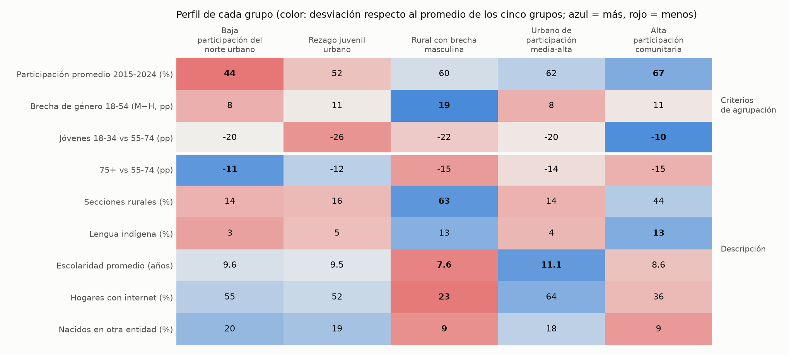
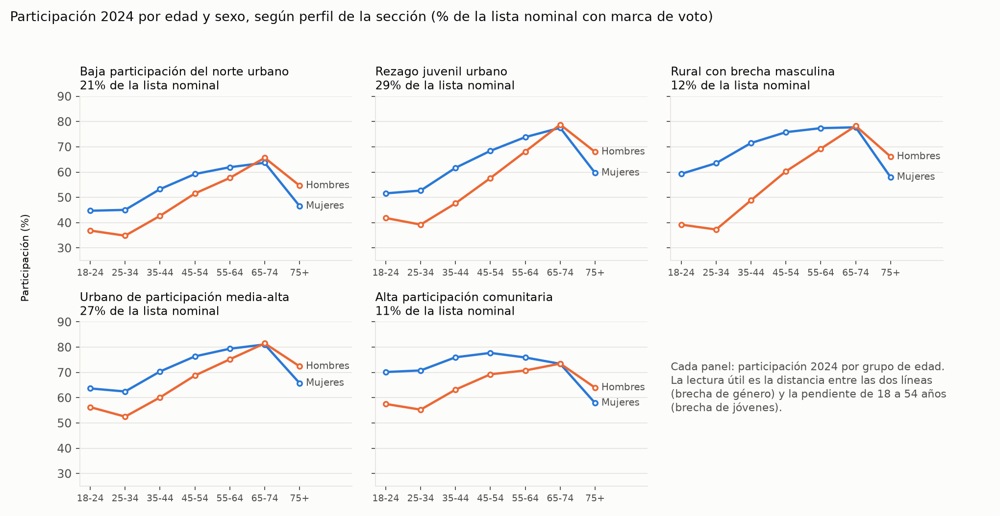
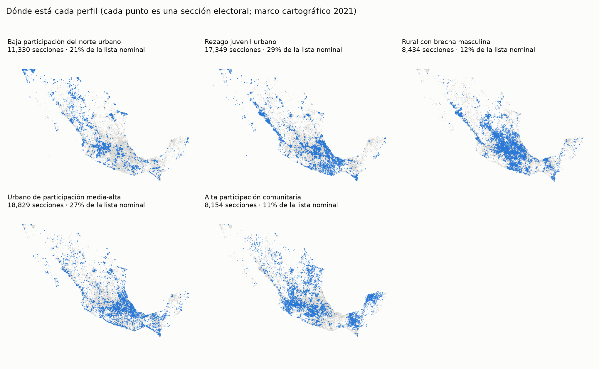
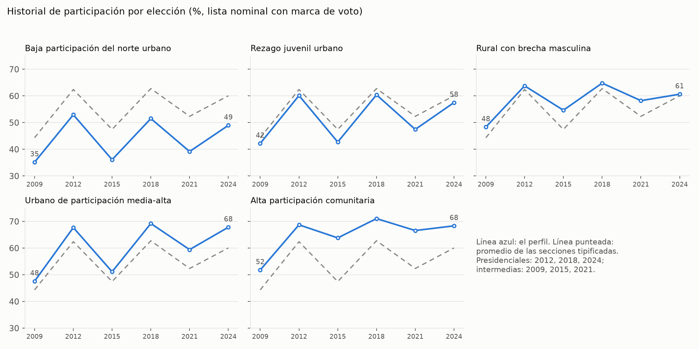
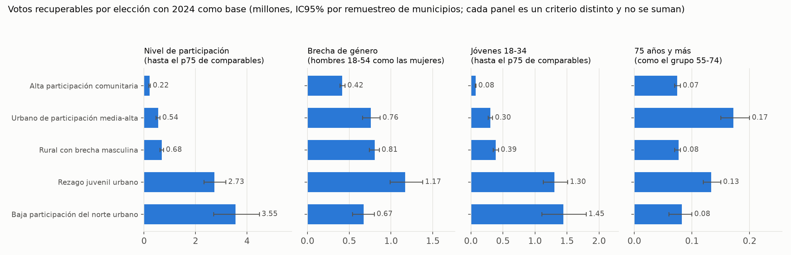

Perfiles ciudadanos de participación a partir de los Conteos Censales de Participación Ciudadana 2009-2024 · Hackea la participación, Reto 1
Segmentamos 64,096 secciones electorales (92% de la lista nominal) en cinco perfiles con tres rasgos de su participación en 2009-2024: cuánto votan (nivel), cuánto menos votan los hombres que las mujeres de 18 a 54 años (brecha de género) y cuánto menos votan los jóvenes de 18 a 34 años que los de 55 a 74 (brecha de jóvenes). Cada perfil tiene nombre, una descripción por edad, sexo, región e historial, y una estrategia de fomento con mensaje, canal e indicador.
La pregunta del reto es qué tipos de ciudadanía existen según su participación. Usamos exclusivamente la Plataforma CCPC: personas con marca de voto en la lista nominal de cada sección, por sexo y grupo de edad, en las seis elecciones federales de 2009 a 2024. La participación es la proporción de personas con marca de voto entre las que tienen registro de captura; no incluye casillas especiales ni voto en el extranjero. Se analizan las secciones presentes en 2015, 2018, 2021 y 2024 con al menos 800 registros (8% de la lista nominal queda fuera).
La escolaridad no viene en la CCPC. Para describir los perfiles usamos descriptores del Censo 2020 por sección (escolaridad, lengua indígena, internet, celular, radio, televisión, migración), publicados por el INE. Son descriptivos y ecológicos: caracterizan la sección, no a quien vota o no vota, y no se usan para formar los perfiles. No se emplea ningún dato personal ni resultado por partido: el INE es imparcial y la segmentación no debe depender de preferencias políticas.
Rasgos. Partimos de ocho rasgos candidatos y conservamos solo los que se repiten en una sección entre dos ventanas de elecciones sin elecciones en común (2009-2015 y 2018-2024). Un rasgo que no se repite describe una elección, no un territorio. Quedaron tres: nivel de participación relativo al nacional, brecha de género de 18 a 54 años y brecha de jóvenes. La intermitencia (votar en presidenciales y no en intermedias) está bien medida pero casi no se repite por territorio (correlación de 0.28 entre secciones y 0.07 entre municipios), por lo que la usamos solo para describir. Para evitar que las secciones con pocos registros muevan los resultados, cada tasa se acerca ligeramente a la tasa nacional del mismo subconjunto.
Segmentación. K-means con cinco grupos sobre los tres rasgos estandarizados. La convocatoria pide de cuatro a seis perfiles; con cinco, la solución es la más estable entre ventanas de tiempo y predice mejor el resultado de 2024 que con cuatro en el 100% de las réplicas de remuestreo de municipios.
Alternativas que probamos. Un árbol de decisión supervisado rinde igual que K-means; una mezcla gaussiana y el método de Ward dibujan fronteras distintas; un agrupamiento por municipio rinde mucho peor porque dentro de un municipio hay secciones de perfiles diferentes. Conservamos K-means por ser el más fácil de comunicar y le añadimos ocho reglas explícitas (un árbol sustituto con 78% de coincidencia validado por entidad) para clasificar cualquier sección o municipio con umbrales transparentes.
Lo que enseña el continuo. Un agrupamiento sobre datos sin grupos reales con la misma covarianza obtiene una silueta casi igual (0.221 frente a 0.231), y HDBSCAN no halla ningún grupo. Los datos son un continuo. Eso no invalida los perfiles; fija cómo usarlos. Los grupos duros pierden cerca de la mitad de lo que predicen los rasgos continuos (R² de 0.21 frente a 0.40), así que ofrecemos dos niveles: perfiles para comunicar y decidir mensajes, y los tres rasgos continuos (o pertenencias suaves a cinco arquetipos) para priorizar secciones.
| Perfil | Secciones | Lista nominal | Participación 2015-2024 | Brecha de género 18-54 (M−H) | Jóvenes frente a 55-74 | Región principal |
|---|---|---|---|---|---|---|
| 1. Baja participación del norte urbano | 11,330 | 19.3 M (21%) | 44% | 8 pp | −20 pp | Norte |
| 2. Rezago juvenil urbano | 17,349 | 26.3 M (29%) | 52% | 11 pp | −26 pp | Centro |
| 3. Rural con brecha masculina | 8,434 | 10.4 M (12%) | 60% | 19 pp | −22 pp | Centro, Sur y Sureste |
| 4. Urbano de participación media-alta | 18,829 | 24.6 M (27%) | 62% | 8 pp | −20 pp | Centro |
| 5. Alta participación comunitaria | 8,154 | 9.6 M (11%) | 67% | 11 pp | −10 pp | Occidente, Bajío, Sur y Sureste |


Ciudades del norte (Baja California, Chihuahua, Durango, Quintana Roo, Sonora), 77% urbano y 20% de población nacida en otra entidad. Es el perfil con menor participación en todas las elecciones y en todas las edades (hombres de 25 a 34 años, 35%; mujeres, 45%). Cuenta con 91% de hogares con celular y 55% con internet. Estrategia: reducir la fricción práctica para votar. Mensaje «tu voto cuenta donde vives» con información sobre dónde votar y cómo actualizar el domicilio de la credencial; canal celular y redes, centros de trabajo y universidades. Indicador: participación de 18 a 34 años y actualizaciones de domicilio. Por verificar con la DERFE: que el domicilio desactualizado sea la causa; el censo solo muestra mucha población nacida en otra entidad.
El más numeroso (29% de la lista nominal): Veracruz, Estado de México, Aguascalientes, Sinaloa e Hidalgo, y gran parte de León, Puebla y Culiacán. Tiene la mayor distancia entre jóvenes y adultos mayores: los hombres de 25 a 34 años votan 39% y las mujeres 53%, frente a más de 77% de las personas de 65 a 74 años. Estrategia: sumar a quienes tienen de 18 a 34 años (1.3 millones de votos recuperables) con información sobre el primer voto y la relevancia local de los cargos, mediante pares y organizaciones juveniles, escuelas y espacios laborales, y apoyándose en los adultos mayores, que sí votan, como multiplicadores en el hogar. Indicador: brecha entre jóvenes y adultos en las secciones del perfil. Es el perfil con asignaciones menos firmes: su lista debe recalcularse con cada CCPC.
Zacatecas, San Luis Potosí, Puebla, Querétaro y Guerrero; 63% de secciones rurales, 7.6 años de escolaridad, 13% con lengua indígena y solo 23% de hogares con internet. Los hombres de 25 a 34 años votan 37% y las mujeres 63%, y la brecha de 19 puntos se cierra desde los 65 años. Probamos que la causa fuera la emigración de hombres que siguen en la lista nominal y no se sostiene: la razón entre lista nominal y población residente es igual para hombres y mujeres (1.17 en ambos), y ajustarla explicaría solo 10% de la brecha. La actividad económica de los hombres (77%) tampoco difiere de los otros perfiles. La causa queda abierta y por eso la estrategia empieza por entender antes de actuar: un estudio cualitativo breve de las Juntas Distritales (horarios de trabajo del domingo, trabajo fuera de la comunidad, distancia a la casilla). Después, mensajes prácticos por televisión, radio local y contacto presencial, con las mujeres que votan como mensajeras en la familia. Indicador: participación de hombres de 25 a 44 años.
Ciudad de México, Tlaxcala, Campeche y Yucatán; la mayor escolaridad (11.1 años) y conectividad (64% con internet). Su brecha de género es pequeña por una razón poco intuitiva: los hombres de 25 a 34 años votan casi como los del perfil de referencia (53% frente a 55%), pero las mujeres de 25 a 34 años votan 63% frente a 71% (−8 pp, IC95% de 7.5 a 9.2). Igualarlas sumaría unos 0.20 millones de votos. Estrategia: información práctica (horario de casilla, tiempos de espera) para mujeres jóvenes con trabajo y cuidados a su cargo, por redes y centros de trabajo; y accesibilidad para personas de 75 años o más. Indicador: participación de mujeres de 25 a 34 años y de 75 o más.
Yucatán, Campeche, Chiapas, Zacatecas y Nuevo León; 44% de secciones rurales. Tiene la participación más alta en cada elección desde 2009 (68% en 2024) y los jóvenes votan casi como los adultos (hombres de 25 a 34 años, 55%; mujeres, 71%). No es prioridad de movilización. Estrategia: documentar qué sostiene la participación de sus jóvenes mediante entrevistas con autoridades comunitarias y funcionariado de casilla, para alimentar los mensajes de los perfiles 2 y 4, y facilitar el voto de 75 años o más. La comparación con este perfil es descriptiva: es más rural y parte de la diferencia puede deberse a eso.


Medición. Con un remuestreo que simula el ruido de las celdas pequeñas, la proporción de la variación entre secciones que no es ruido es de 0.99 para el nivel, 0.82-0.85 para la brecha de género y 0.84-0.89 para la de jóvenes. La persistencia incompleta entre décadas es, por tanto, cambio real y no error de medición.
Validez en el tiempo. Con perfiles construidos con 2009-2018 y resultados de 2024, el perfil explica 32% de la varianza del nivel, 27% de la brecha de género y 15% de la de jóvenes (los grupos al azar, 0%). La brecha de jóvenes es el eje más débil: ahí el estado explica más (20%), aunque ambos se complementan. Sobre la geografía, el perfil añade de 0.13 a 0.23 de R² por encima de los 32 estados y de 0.05 a 0.11 por encima de unos 2,400 municipios.
Diferenciación. Los perfiles explican entre 55% y 61% de la varianza de cada eje; la distancia mínima entre centros es de 1.4 a 1.8 desviaciones estándar y solo 11% de la lista nominal está cerca de una frontera. La asignación de una sección se repite en 85% de las réplicas con ruido; 69% de las secciones lo hacen en al menos 80%, y publicamos esa confianza por sección. Una lección de rigor: una primera validación compartía una elección entre rasgos y resultado e inflaba un R²; la corregimos con ventanas sin elecciones en común.
Dónde ocurre el cambio. Las diferencias entre secciones de un mismo municipio persisten más (0.77) que las diferencias nacionales (0.69): el movimiento entre elecciones es sobre todo de municipios y estados completos. En la práctica, el orden de prioridad entre secciones de un mismo distrito es más confiable que el orden nacional.

Producto. Entregamos un tablero (un solo archivo HTML, sin servidor) con mapa de distritos, municipios y secciones, filtros por entidad, distrito, perfil y confianza de asignación, y descarga en CSV; y tablas de votos recuperables por perfil, municipio y distrito. Se actualiza corriendo el código con cada nueva publicación de la CCPC.
| Quién | Qué haría con los perfiles |
|---|---|
| Juntas Distritales y Locales | Ubicar sus secciones prioritarias y el grupo de edad y sexo al que dirigir la comunicación; orden de prioridad dentro del distrito. |
| DECEyEC | Diseñar mensajes y canales por perfil para la movilización nacional de las intermedias de 2027; medir resultados con la CCPC. |
| DERFE | Verificar si el domicilio desactualizado es frecuente en el perfil 1 y atender accesibilidad de 75 años o más. |
Piloto en 2027. Asignar al azar secciones de un mismo perfil a dos o más brazos y medir con la CCPC 2027, que resuelve sección, sexo y edad. Con 250 secciones por brazo se detectan efectos de 1.0 a 1.7 puntos en grupos focalizados; los mensajes masivos requieren cerca de 1,000 por brazo (efecto mínimo de 0.7-0.8 puntos). La literatura experimental da una guía de magnitudes: mensajes de texto de recordatorio, de 0.7 a 0.9 puntos (Dinamarca, Finlandia); una segunda llamada, 1.2; la visita en persona, cerca de 4.3 entre quienes son contactados. En México, volantes con información neutral no movieron la participación y los de corrupción la redujeron 1.3 puntos (Chong et al., 2015). Por eso priorizamos mensajes prácticos y neutrales, y contacto presencial donde no hay internet.
Código abierto en https://github.com/gpancardo/ine (carpetas shared/ y reto1_perfiles/). Los scripts se ejecutan con uv run desde la raíz, comenzando por shared/download_data.py y shared/build_panel.py; el orden completo está en reto1_perfiles/README.md. Cada cifra de este documento proviene de un CSV en reto1_perfiles/reports/. El informe técnico completo, con todas las tablas de validación, es reto1_perfiles/reports/INFORME.md.